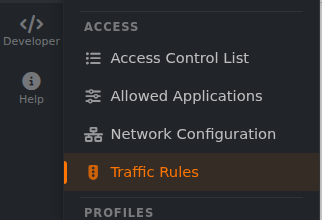
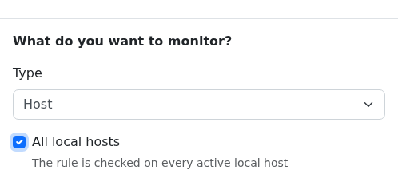

Traffic Rules
ntopng can trigger customizable alerts, based on timeseries. This is useful to identify missbehaviors from devices, interfaces…
Note
This feature is available only from Enterprise M license or superior.

Configured Traffic Rules
- Here some example of rules:
The daily traffic of ens160 network interfce does not have to exceed 15 GB in total;
The daily traffic of 192.168.2.28 does not have to be less than 2 GB in total;
The NTP daily traffic of 192.168.1.1 does not have to exceed 2 GB in total;
The 1kxun traffic every 5 minutes of 1.1.1.1 does not have to exceed 15% from the precedent 5 minutes total traffic;
The traffic every 5 minutes of 1.1.1.1 does not have to exceed 1 Mbps;
Whenever a condition is met, ntopng is going to trigger an alert.
Note
To page is accessible from the Settings -> Traffic Rules

Access Traffic Rules
Available Rules
The rules can be set for each timeseries currently available in ntopng. The rules can be configured for:
Flow Exporters;
Host Pools;
Interfaces;
Local Hosts;
Networks;
Traffic Profiles;
VLANs;
Configure Rules
To add a new rule, click the ‘Add rule’ button at the top right of the page

Add a Traffic Rule
- At this point, fill the fields with the correct informations:
Type: select the kind of subject to be analyzed (Interface, Host, Host pool, Network, VLAN, Traffic profile, Autonomous system or Flow exporter);
Interface / Host / Network / …: select the subject to be analyzed (e.g. the interface enp1s0, or the IP address of a Host);
All local hosts: available for the Host type, tick this checkbox to analyze every active local host at once (e.g. All local hosts). This replaces the previous * wildcard target, which is no longer used;
Metric: select the metric to be analyzed (e.g. Traffic (RX + TX), Score or an application such as DNS -> the DNS traffic);
Measured as: select how the metric is measured: Average bandwidth (bits per second, averaged over the period), Total traffic (bytes exchanged during the period) or Change (increase or decrease compared to the previous period);
Alert when the value is: choose Above or Below, then type the threshold value and choose its unit (e.g. Kbps, Mbps or Gbps), that, if exceeded, is going to trigger an alert;
Check every: choose the frequency of the analysis: 5 minutes, Hour, Day or Month.
A Summary box at the bottom of the form describes the rule in plain words before it is added.
Note
The available metrics to be analyzed depend on the available timeseries; this means that if the Application Timeseries are not enabled from the preferences, it’s not possible to configure/trigger a rule based on Applications

Example of Traffic Rule on an interface, triggering an alert when the traffic is above 1 Mbps
Monitor All Local Hosts
To apply a rule to every local host, select the Host type and tick the ‘All local hosts’ checkbox: the rule is then checked on every active local host, and the Host field is disabled.

Selecting All local hosts to monitor every local host
Note
The * wildcard used in previous versions in the Target field is no longer available: use the ‘All local hosts’ checkbox instead.
From now on, a new entry with the configured fields is going to be added to the table and whenever the threshold is exceeded a new alert is going to be triggered.
Edit/Delete Rules
It is moreover possible to edit or delete an already created rule.
To do so, use the button of the rule that needs changes: the button itself opens Edit, the arrow next to it opens the menu with Delete:
Edit: It is possible to change the rule of an already existing one; the modal is the same as the one used to add a new rule, so please refer to the above section;
Delete: It is possible to remove a rule; when removed the alert is not going to be triggered anymore;

Remove a Traffic Rule
Note
Traffic rules are evaluated according to the rule frequency specified. For instance Daily rules are evaluated every midnight considering the traffic of the previous day.